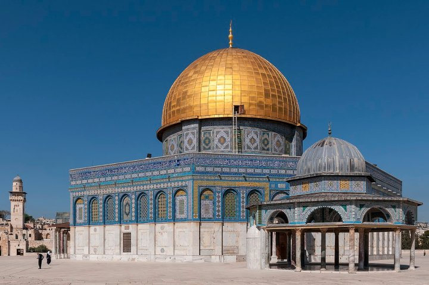
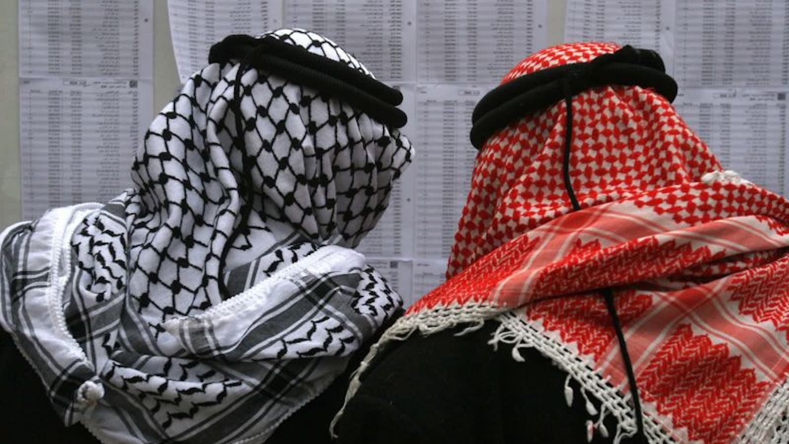
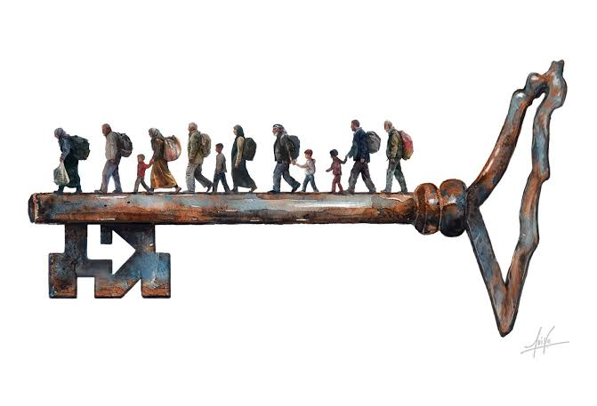
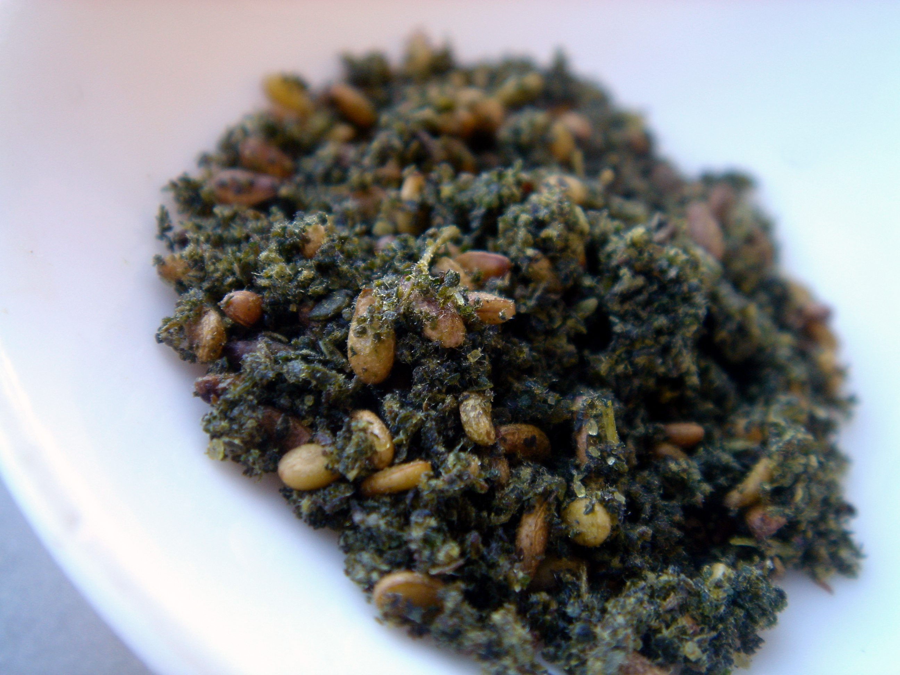
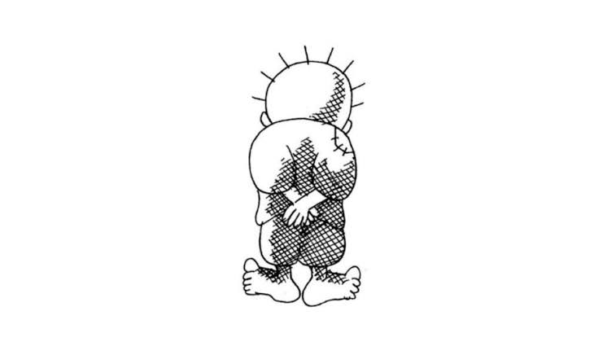
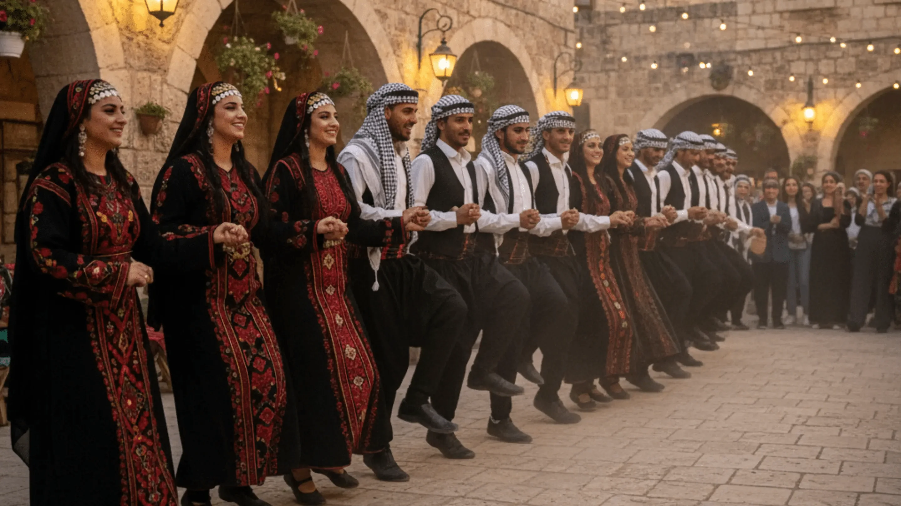
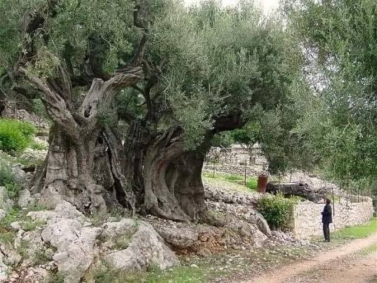
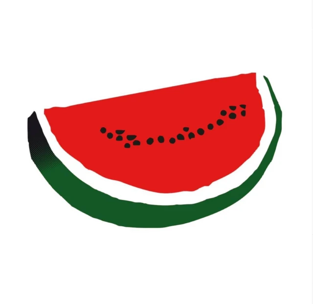

Identidad y símbolos
Palestina posee una historia y una cultura que se expresan a través de símbolos transmitidos entre generaciones. Algunos nacieron de las costumbres cotidianas, otros están relacionados con acontecimientos históricos y otros surgieron del arte y de la experiencia del desplazamiento. Con el tiempo, estos símbolos han pasado a representar la memoria colectiva, el vínculo con la tierra y la continuidad de la identidad palestin
Al-Aqsa y la Cúpula de la Roca
Según la tradición islámica, la mezquita de Al-Aqsa que se encuentra en la Ciudad Vieja de Jerusalén, fue la primera quibla, es decir, la dirección hacia la que se orientaban los musulmanes para rezar, antes de que esta pasara a ser la Kaaba, en La Meca. También ocupa el tercer lugar entre los santuarios más importantes del islam.
Dentro del recinto sagrado se encuentra la Cúpula de la Roca, reconocible por su característica cúpula dorada. Su arquitectura aparece con frecuencia en dibujos, pinturas y representaciones de Palestina. Para muchos palestinos, estos lugares representan la relación histórica y espiritual con Jerusalén, además de formar parte de su patrimonio cultural y religioso.

La kufiyya
La kufiyya es un pañuelo que se utilizaba tradicionalmente en Palestina y otras regiones de Oriente Medio para protegerse del sol, el frío y el polvo. Durante siglos estuvo especialmente vinculada a campesinos y comunidades rurales, formando parte de la vestimenta cotidiana.
Su significado cambió durante la Gran Revuelta Palestina de 1936-1939 contra el dominio británico. Los combatientes la utilizaban para ocultar su identidad y dificultar su identificación por parte de las autoridades. Cuando estas intentaron restringir su uso, muchos palestinos comenzaron a llevarla como muestra de solidaridad, haciendo que una prenda cotidiana se convirtiera en un símbolo colectivo.
Posteriormente, la kufiyya blanca y negra alcanzó una gran proyección internacional, especialmente por su asociación con Yaser Arafat. Desde entonces, se ha convertido en una de las representaciones más reconocibles de la identidad palestina

La llave del retorno
La llave del retorno está relacionada con la Nakba de 1948, cuando cientos de miles de palestinos fueron desplazados o huyeron de sus hogares. Muchas familias conservaron las llaves de sus casas, pensando que podrían regresar algún día.
Con el paso de los años, estas llaves dejaron de ser únicamente objetos domésticos y adquirieron un significado colectivo. Algunas familias las transmitieron a sus hijos y nietos junto con las historias de las viviendas, los pueblos y las tierras que habían tenido que abandonar.
Actualmente, las representaciones de grandes llaves aparecen en exposiciones, murales y obras artísticas palestinas. Simbolizan la memoria del desplazamiento y la reivindicación del derecho de los refugiados palestinos a regresar a sus hogares, de acuerdo con las reivindicaciones históricas de sus comunidades.

El zaatar palestino
El zaatar es una planta aromática que crece en zonas montañosas y que forma parte de la tradición culinaria palestina. Se recolecta y se seca para después combinarla con ingredientes como el sésamo y la sal. Una de sus preparaciones más conocidas consiste en mezclarlo con aceite de oliva y acompañarlo con pan o utilizarlo como ingrediente de las manaqish.
Tradicionalmente, el zaatar forma parte del desayuno de numerosas familias y está relacionado con los hábitos alimentarios transmitidos entre generaciones. Sin embargo, su significado también va más allá de la cocina. La planta crece en el paisaje local y está vinculada al conocimiento de la tierra y de sus recursos.
El artículo que compartiste señala que, en determinados periodos, se restringió su recolección o venta. Estas limitaciones contribuyeron a que adquiriera un significado asociado a la defensa de las costumbres tradicionales y al vínculo con el territorio. Así, una planta cotidiana se convirtió también en una expresión de identidad cultural.

Handhala
Handhala es un personaje creado en 1969 por el caricaturista palestino Nayi al-Ali. Se representa como un niño de diez años, descalzo, con ropa desgastada y las manos entrelazadas detrás de la espalda. Habitualmente aparece de espaldas al espectador, de modo que no se le ve el rostro.
El personaje nació en un contexto marcado por el desplazamiento de la población palestina y la experiencia de los refugiados. Su creador explicó que Handhala tendría siempre diez años y que no crecería hasta poder regresar a Palestina. Esta decisión simbolizaba una infancia interrumpida por el exilio y una vida que no podía continuar con normalidad mientras persistiera esa situación.
A lo largo de las décadas, Handhala apareció en numerosas caricaturas para denunciar las dificultades vividas por los palestinos. Su imagen se extendió por murales, carteles y manifestaciones, convirtiéndose en un símbolo de la memoria, la dignidad y el rechazo al olvido de la experiencia de los refugiados.

La dabke palestina
La dabke es una danza tradicional colectiva que se practica en Palestina, especialmente durante bodas, celebraciones y acontecimientos comunitarios. Los bailarines suelen colocarse en una línea o un semicírculo, se toman de las manos o de los hombros y ejecutan pasos coordinados siguiendo el ritmo de la música.
Su origen se relaciona con las costumbres de las comunidades rurales del Levante. Una explicación tradicional vincula sus movimientos con la práctica de pisar y compactar la tierra durante la construcción de viviendas. Con el tiempo, estos movimientos se transformaron en una danza que reúne a varias personas mediante el ritmo y la coordinación.
En Palestina, la dabke ha adquirido también un significado cultural y nacional. Bailarla permite mantener vivas las tradiciones y transmitirlas a las nuevas generaciones. Por eso, sigue presente tanto en celebraciones familiares como en festivales culturales y acontecimientos relacionados con la identidad palestina.

El olivo y su rama
El olivo forma parte del paisaje palestino y de la vida de muchas familias desde hace generaciones. Su cultivo proporciona aceitunas y aceite de oliva, además de estar relacionado con las tradiciones agrícolas y la transmisión de tierras entre generaciones.
Debido a su longevidad, el olivo se convirtió en una representación del arraigo y la continuidad. Un árbol puede permanecer durante décadas o incluso siglos, mientras distintas generaciones de una misma familia continúan cuidándolo. Por eso, los olivares tienen un valor que no es únicamente económico, sino también familiar y cultural.
La rama de olivo adquirió además un significado político internacional en 1974, cuando Yaser Arafat pronunció un discurso ante la Asamblea General de las Naciones Unidas en el que la presentó como símbolo de paz, junto con la referencia al combatiente palestino. Su intervención vinculó la esperanza de una solución pacífica con la defensa de las reivindicaciones palestinas. Desde entonces, la rama de olivo se ha asociado especialmente con la paz, sin perder su relación con la tierra y la identidad palestinas.

La sandía
Durante determinados periodos se restringió la exhibición pública de la bandera y de sus colores. En ese contexto, la sandía, que tiene los mismos colores que la bandera, podía utilizarse como una manera alternativa de representar la identidad palestina mediante una imagen cotidiana.
Con el tiempo, la sandía comenzó a aparecer en ilustraciones, carteles y expresiones artísticas y se convertió en un simbolo visual asociado a Palestina. Su uso se ha extendido internacionalmente, especialmente en manifestaciones y publicaciones, donde permite hacer referencia a la identidad palestina a través de sus colores.

Un conflicto con profundas raíces históricas
Para comprender la situación actual de Palestina, es necesario mirar atrás y conocer los acontecimientos que transformaron el territorio y la vida de su población. Durante décadas, las aspiraciones nacionales palestinas y el movimiento sionista, que defendía la creación de un hogar nacional judío en Palestina, se desarrollaron en una misma tierra, en un contexto de creciente tensión política y territorial.
1917
Palestina bajo administración británica
Tras la caída del Imperio otomano, Palestina quedó bajo el Mandato Británico. En 1917, la Declaración Balfour expresó el apoyo británico al establecimiento de un hogar nacional para el pueblo judío en Palestina, sin perjuicio de los derechos civiles y religiosos de las comunidades no judías existentes. Durante las décadas siguientes aumentó la inmigración judía, especialmente como consecuencia de la persecución antisemita en Europa, mientras la población árabe palestina reclamaba su independencia y se oponía a determinadas políticas británicas y al proyecto sionista.


La Nakba
Se proclamó el Estado de Israel y estalló la guerra. Más de 700.000 palestinos huyeron o fueron expulsados de sus hogares. Los palestinos conocen este desplazamiento masivo como la Nakba, que significa catástrofe en árabe. Muchas familias se convirtieron en refugiadas y no pudieron regresar a sus lugares de origen. La cuestión de los refugiados y el derecho al retorno continúan siendo asuntos centrales del conflicto.
1948
1967
El inicio de la ocupación
En las décadas posteriores se expandieron los asentamientos israelíes en los territorios ocupados y se establecieron diferentes sistemas de control territorial, permisos y restricciones de circulación. Estas políticas han afectado al acceso a las tierras, la vivienda, los recursos y los servicios esenciales de numerosas comunidades palestinas.


Los Acuerdos de Oslo
Los Acuerdos de Oslo abrieron una nueva etapa de negociaciones entre Israel y la Organización para la Liberación de Palestina (OLP). Se creó la Autoridad Palestina y se establecieron mecanismos de autogobierno limitado en determinadas zonas. Sin embargo, cuestiones fundamentales como las fronteras definitivas, Jerusalén, los refugiados y los asentamientos quedaron pendientes. El proceso de paz no logró establecer un Estado palestino independiente ni resolver el conflicto.
1993
2007
Tomada de la Franja de Gaza
En 2007, Hamás tomó el control de la Franja de Gaza tras enfrentamientos con Fatah. Israel endureció las restricciones sobre Gaza, que ya estaba sometida a medidas de control, y Egipto también restringió el paso por su frontera. El bloqueo y los sucesivos enfrentamientos militares agravaron las condiciones de vida de la población.


la persistencia del conflicto
El 7 de octubre de 2023, Hamás y otros grupos armados atacaron Israel, matando a civiles y militares y tomando rehenes. Israel respondió con una ofensiva militar a gran escala en Gaza, que provocó una destrucción generalizada, desplazamientos masivos y una grave crisis humanitaria.
2023
Un conflicto que sigue sin resolverse
La situación actual es el resultado de décadas de desplazamientos, ocupación, enfrentamientos y negociaciones fallidas. Para la población palestina, cuestiones como la autodeterminación, el territorio, la libertad de movimiento y el derecho al retorno siguen siendo fundamentales. Comprender esta historia permite analizar las políticas actuales y sus consecuencias sin reducir la experiencia de todo un pueblo a una guerra o a una fecha concreta.
Las restricciones impuestas a la población palestina
La ocupación israelí y las políticas aplicadas en los territorios palestinos afectan a numerosos aspectos de la vida cotidiana. Las restricciones de movimiento, el control territorial y las limitaciones de acceso a recursos y servicios condicionan la libertad y las oportunidades de la población palestina.
-
Libertad de movimiento
En Cisjordania, los puestos de control militares, las barreras y los permisos de circulación dificultan los desplazamientos entre ciudades y comunidades. Estas medidas pueden afectar al acceso al trabajo, la educación y la atención médica.
-
Territorio y asentamientos
La expansión de los asentamientos israelíes en Cisjordania y Jerusalén Oriental contribuye a fragmentar el territorio palestino y limita el acceso de algunas comunidades a sus tierras y recursos. El derecho internacional considera ilegales los asentamientos israelíes en los territorios palestinos ocupados.
-
Fronteras y bloqueo de Gaza
Las restricciones a la entrada y salida de personas y mercancías han afectado durante años a la economía y a las condiciones de vida en Gaza. Las operaciones militares y las limitaciones a la entrada de ayuda humanitaria han agravado las dificultades para acceder a alimentos, agua potable, medicamentos y refugio.
-
Vivienda y desplazamientos
Las demoliciones de viviendas y otras estructuras palestinas, incluidas las relacionadas con la falta de permisos de construcción, pueden provocar desplazamientos y dejar a familias sin hogar. Las expulsiones y los desplazamientos forzados también generan preocupación por la protección de la población civil.
-
Agua y recursos naturales:
Las restricciones de acceso, las diferencias en las infraestructuras y el control de determinados recursos dificultan el abastecimiento de agua en algunas comunidades palestinas. Esto afecta al consumo doméstico, la agricultura y el desarrollo económico.
-
Residencia y vida familiar
Las políticas de residencia, los permisos y las restricciones administrativas pueden dificultar la permanencia en determinadas zonas, la reunificación familiar y el acceso a servicios, especialmente en Jerusalén Oriental.
¿Qué consecuencias tienen estas restricciones?
Estas medidas repercuten en la vida diaria de la población palestina: dificultan la movilidad, limitan las oportunidades económicas, aumentan la inseguridad residencial y obstaculizan el acceso a servicios esenciales.
Aunque las autoridades israelíes justifican determinadas restricciones por motivos de seguridad, su aplicación y sus efectos deben evaluarse conforme al derecho internacional. En su dictamen de julio de 2024, la Corte Internacional de Justicia concluyó que la presencia continuada de Israel en el territorio palestino ocupado es ilegal y señaló las obligaciones internacionales de Israel respecto al fin de esa presencia.
Hablar de estas restricciones significa analizar cómo las políticas de ocupación afectan a los derechos, la dignidad y las condiciones de vida de la población palestina.
COMO AYUDAR?
UNRWA – Agencia de Naciones Unidas para los Refugiados de Palestina
Organización que trabaja para proteger y apoyar a los refugiados palestinos. Proporciona alimentos, agua potable, atención médica, educación y refugio a las familias que necesitan ayuda humanitaria.
PCRF – Palestine Children's Relief Fund
Organización humanitaria dedicada a ayudar a los niños palestinos que necesitan atención médica. Ofrece tratamientos especializados, cirugías, medicamentos y asistencia sanitaria gratuita a menores afectados por el conflicto.
Médicos Sin Fronteras (MSF)
Organización médica internacional que proporciona asistencia sanitaria a personas afectadas por conflictos y crisis humanitarias. En Palestina, sus equipos ofrecen atención de urgencia, realizan intervenciones quirúrgicas y apoyan a los hospitales locales.
Medical Aid for Palestinians (MAP)
Organización humanitaria que trabaja para garantizar el acceso a la salud del pueblo palestino. Proporciona medicamentos, equipos médicos, asistencia de emergencia y apoyo psicológico, colaborando con profesionales y centros sanitarios locales.
5. Palestine Red Crescent Society
Organización humanitaria palestina que ofrece servicios de emergencia y asistencia médica a la población. Sus equipos trabajan con ambulancias, hospitales y centros de salud para atender a personas heridas y comunidades afectadas por las crisis.
6. UNICEF – Fondo de las Naciones Unidas para la Infancia
Organización internacional que defiende los derechos y el bienestar de los niños. En Palestina, trabaja para proporcionar agua potable, alimentos, atención médica, protección y apoyo psicológico a los menores afectados por el conflicto.